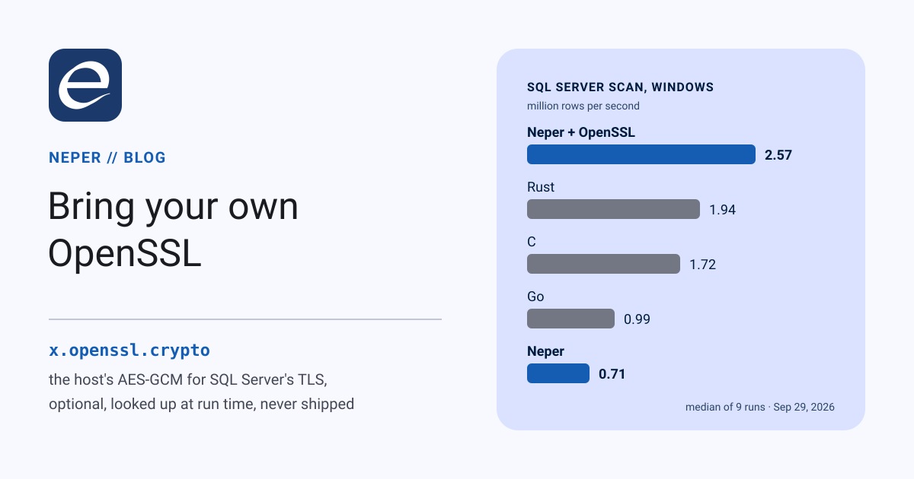

Bring your own OpenSSL: SQL Server scans, three times faster

Neper's SQL Server driver speaks TDS inside TLS 1.3, and every byte it reads is decrypted by Neper's own AES-GCM. That cipher is portable and constant-time, and it is slow: it held the driver's scans to 28–35% of the fastest language in the e.db benchmark. A program can now hand record encryption to the host's OpenSSL, if the host has one. Scans get 3.2–3.6 times faster, and on Windows Neper's scan is now the fastest of the five. Neper still ships no OpenSSL, and a program that asks for it still runs where there is none.
Where the time went
SQL Server 2022 and later can run TDS entirely inside TLS: the handshake comes before the first TDS byte, so the login and every result travel encrypted. Neper's driver, x.microsoft.tds, only connects that way. So a scan of 20,000 rows arrives as about 600 KB of TLS records, and each record is authenticated and decrypted with AES-128-GCM before the driver reads a byte of it.
e.crypto.aead's AES-GCM is written in portable Neper. It avoids secret-dependent table lookups and branches: four blocks at a time, bitsliced into eight 64-bit words, with a GHASH built from masked integer products (D1645). That is already 63 times faster than the version it replaced. It still runs on general-purpose instructions, while OpenSSL, Go and rustls use the CPU's AES and carry-less-multiply instructions. Sealing one record, measured from the same Neper program on the same laptop:
| One TLS record | Neper AES-GCM | OpenSSL | Factor |
|---|---|---|---|
| 100 bytes, Windows | 11.1 µs | 0.47 µs | 24× |
| 100 bytes, Linux | 11.7 µs | 0.70 µs | 17× |
| 16 KB, Windows | 669 µs | 2.5 µs | 263× |
| 16 KB, Linux | 730 µs | 2.8 µs | 262× |
A lookup sends one small record and reads one back, so the cipher costs it tens of microseconds out of a couple of hundred. A scan is almost all large records, and there the cipher was most of the time.
What moves to OpenSSL, and what does not
Only the record cipher moves. e.net.tls has a new hook, use_aead, that a caller sets before the handshake. Its cipher must seal and open exactly as e.crypto.aead's AES-128-GCM does, and from then on every protected record goes through it: the handshake's encrypted messages and the application data (D1646). Everything else stays in Neper:
- The handshake: X25519, the transcript, the Finished checks.
- The certificate checks: the chain to the roots the caller pinned, the host name, and the RSA and ECDSA signatures. OpenSSL never decides whom to trust.
- The key schedule: HKDF, the traffic keys and the record sequence numbers. OpenSSL sees one key and one nonce per record, and nothing else.
Handing all of TLS to libssl was the other design, and it would have moved certificate policy out of Neper as well. The narrow hook keeps the part that decides whom to trust, verified and portable, and outsources only arithmetic whose output is fully specified and checked.
Using it
x.openssl.crypto adapts libcrypto's EVP AES-128-GCM to the hook. load answers NotFound when the host has no OpenSSL, so the natural shape is to try it and fall back:
use x.microsoft.tds
use x.openssl.crypto
// The host's OpenSSL if it has one; Neper's own cipher otherwise.
let (openssl, load_error) = crypto.load(a)
var c: db.Connection = zero
if load_error == ok {
c = try tds.open_with_cipher(a, options, crypto.aead_of(openssl))
} else {
c = try tds.open(a, options)
}Everything after that is plain e.db, and the connection behaves identically either way. The hook is not specific to SQL Server: any e.net.tls client can take it before its handshake.
var stream = try tls.client(a, source, sink, config)
try tls.use_aead(&stream, crypto.aead_of(openssl))
try tls.handshake(&stream)One Crypto holds one OpenSSL cipher context, so it serves one connection on one thread; a program with several connections loads one per connection.
Optional, and nothing we ship
- No build-time link. The package names its ten libcrypto functions and looks each one up with
os.dlopenandos.dlsymwhenloadruns. A program that imports it has no dependency on OpenSSL when it starts, and on a host without it,loadreportsNotFound. - The host's copy. On Linux that is the distribution's
libcrypto.so.3; our tests ran OpenSSL 3.0.13 on Ubuntu 24.04. On Windows it is alibcrypto-3-x64.dllon the DLL search path; our tests use the one Git for Windows installs (OpenSSL 3.5.6), copied to a tools directory. - No default. No
e.*module reaches for OpenSSL on its own. Without the hook, TLS in Neper is Neper all the way down, as before.
How it is tested
A new fixture, link/x_openssl, runs on both hosts with one exit code per check:
- OpenSSL's seal and open agree byte for byte with
e.crypto.aeadfor every length from 0 to 300 bytes and for records up to 16,385, with random keys, nonces and additional data. - A flipped bit anywhere is refused, and the output is left zeroed, as the portable open never writes plaintext before the tag checks out. A short buffer is refused too.
- A live TLS 1.3 exchange over pipes moves 100 KB each way between a client whose records OpenSSL seals and a server using the portable cipher, so each side checks the other's arithmetic.
- The hook is refused once the handshake is done.
With PATH cut down to the Windows system directories, load answers NotFound, and the fixture fails when told OpenSSL is required and passes when it is not. And link/x_tds stores 100 KB of text and bytes in SQL Server through an OpenSSL-sealed connection and reads them back through a portable one.
Performance
The workload is the e.db benchmark's: 20,000 rows of (bigint, text, double) inserted through one prepared statement in one transaction, scanned back through one streaming reader, and 5,000 primary-key lookups. SQL Server 2025 Developer ran locally: an instance on Windows 11, and Microsoft's mssql-server package under WSL2 Ubuntu 24.04, on a Core i5-12500H laptop.
- Neper is
x.microsoft.tdswith its portable cipher, and Neper + OpenSSL the same program withopen_with_cipher: TDS 8.0 strict. - C runs through Microsoft's ODBC Driver 18 with
Encrypt=Strict, on OpenSSL. - Go runs through
microsoft/go-mssqldb1.11 in its strict mode. - Rust runs through
tiberius0.12 on rustls. It has no strict mode, so it negotiates TLS inside TDS's PRELOGIN, and everything after that is encrypted.
All five check the server's certificate against the same pinned one. Each round ran every implementation once, alternated, 9 rounds after a warm-up; the tables report medians. The interquartile spread was 3–14% on Linux and up to 43% on Windows, so read the Windows cells as rough.
1st2ndlastin each row
| Windows 11 | Neper | Neper + OpenSSL | C | Go | Rust |
|---|---|---|---|---|---|
| Insert, rows/s | 6,021 | 7,591 | 8,912 | 7,093 | 7,570 |
| Scan, rows/s | 707,389 | 2,572,546 | 1,719,336 | 987,118 | 1,942,502 |
| Lookup, µs | 160.3 | 135.3 | 121.2 | 171.0 | 126.1 |
| Linux (WSL2) | Neper | Neper + OpenSSL | C | Go | Rust |
|---|---|---|---|---|---|
| Insert, rows/s | 3,720 | 4,266 | 4,404 | 3,535 | 4,601 |
| Scan, rows/s | 618,079 | 1,962,373 | 1,910,784 | 1,226,245 | 2,015,439 |
| Lookup, µs | 261.8 | 237.0 | 235.1 | 299.5 | 223.6 |
With OpenSSL, Neper's scan goes from 707,389 to 2,572,546 rows per second on Windows (3.6×) and from 618,079 to 1,962,373 on Linux (3.2×). On Windows that is the fastest scan of the five, ahead of Rust's 1.94 million and C's 1.72 million. On Linux it is second, 3% behind Rust and ahead of C. Without it, Neper's scan is last on both hosts.
Inserts and lookups gain less, as they should. Each statement waits on a round trip to the server, and its records are small, so the cipher was a smaller share of the time. With OpenSSL, inserts are 15% faster on Linux and 26% on Windows, and lookups take 9% and 16% less time. That brings Neper's lookups within 1% of C's on Linux and 12% on Windows, and its inserts within 7% of Rust's on Linux; on Windows they match Rust's and trail C's by 15%.
Why the scan can win. Once the cipher is the same code the others run, what is left is the driver. Neper's parses TDS packets in place and copies each value once, into the reader's row. The C baseline goes through ODBC, which asks for every value with a separate SQLGetData call and converts the text to UTF-16. So Neper's scan is not fast because of OpenSSL; OpenSSL just stops hiding it.
What comes next
The better fix is for Neper not to need OpenSSL at all. Item C098 in the compiler backlog is to emit the AES and carry-less-multiply instructions directly, behind a CPU check, with the portable code as the fallback. The compiler already does this for the SHA-256 and CRC-32C it runs over its own build artifacts. Until then, OpenSSL is one line away for programs that want it, and nothing changes for those that do not.
Try it
The package is lib/x/openssl, specified in docs/packages/x.openssl.crypto.md; the hook is tls.use_aead, and the SQL Server entry point tds.open_with_cipher. To reproduce the tables, build benchmarks/db/src/sqlserver.e in release mode as <prefix>-sqlserver, set up the servers as the e.db post describes, and run:
$ pwsh benchmarks/db/run-windows-all.ps1 build/bench/neper results-windows.json -Drivers sqlserver -Openssl
$ NEPER_BENCH_OPENSSL=1 bash benchmarks/db/run-linux-all.sh build/linux/bench/neper results-linux.json 9 sqlserverOn Windows the script puts <tools>\openssl first on PATH; put a libcrypto-3-x64.dll there. The raw samples are in benchmarks/db/results/, as windows-2026-09-29-sqlserver-openssl.json and linux-2026-09-29-sqlserver-openssl.json.